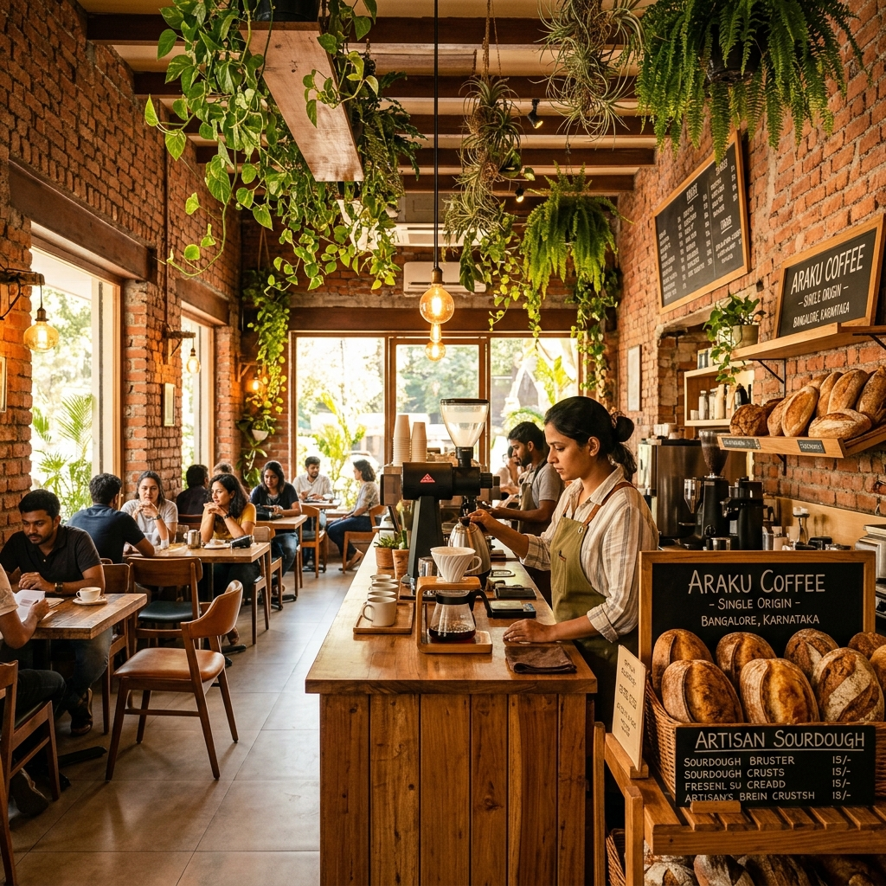
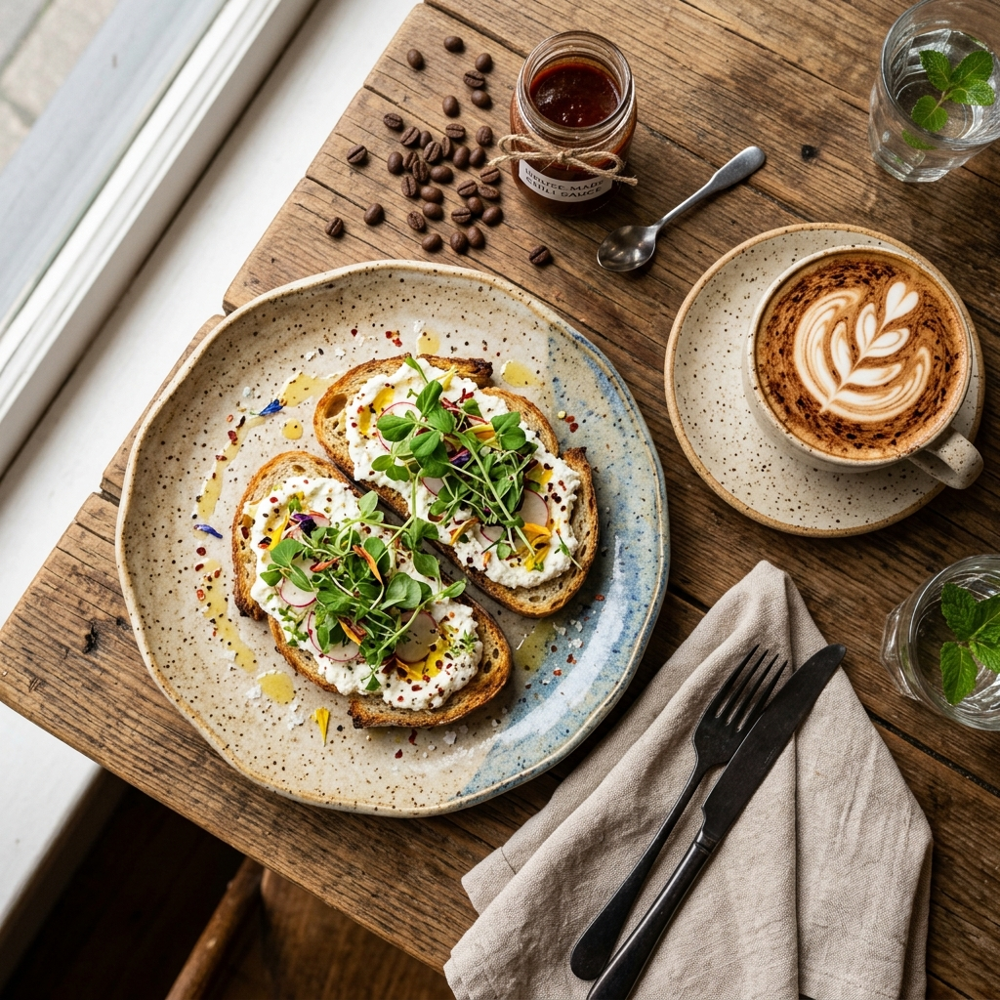
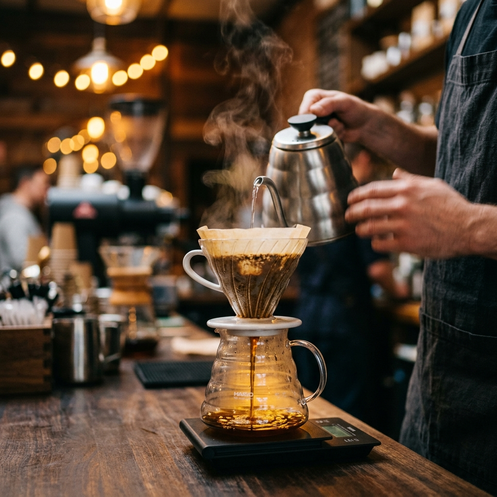
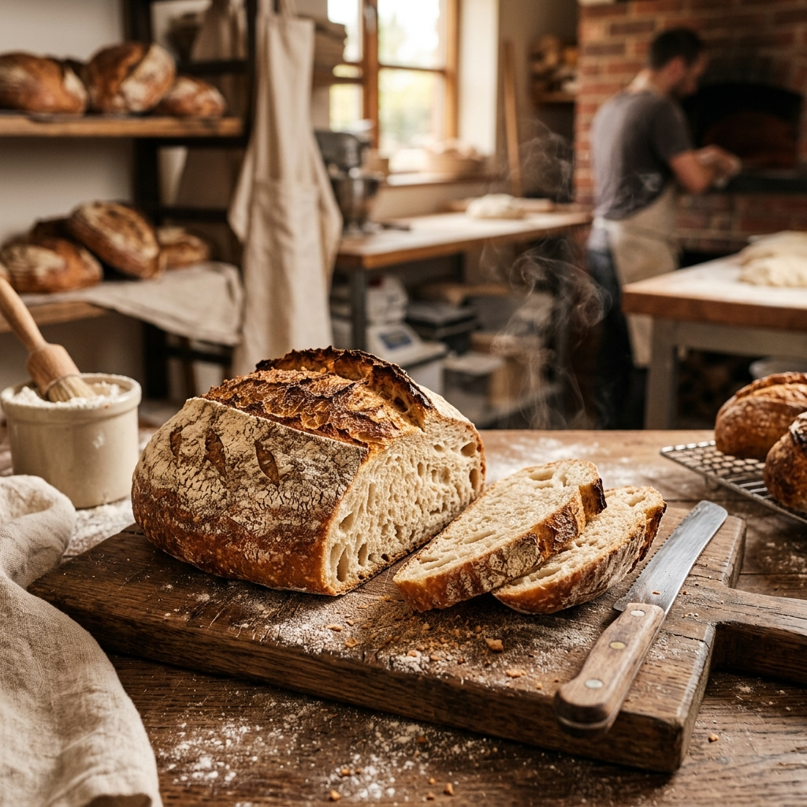
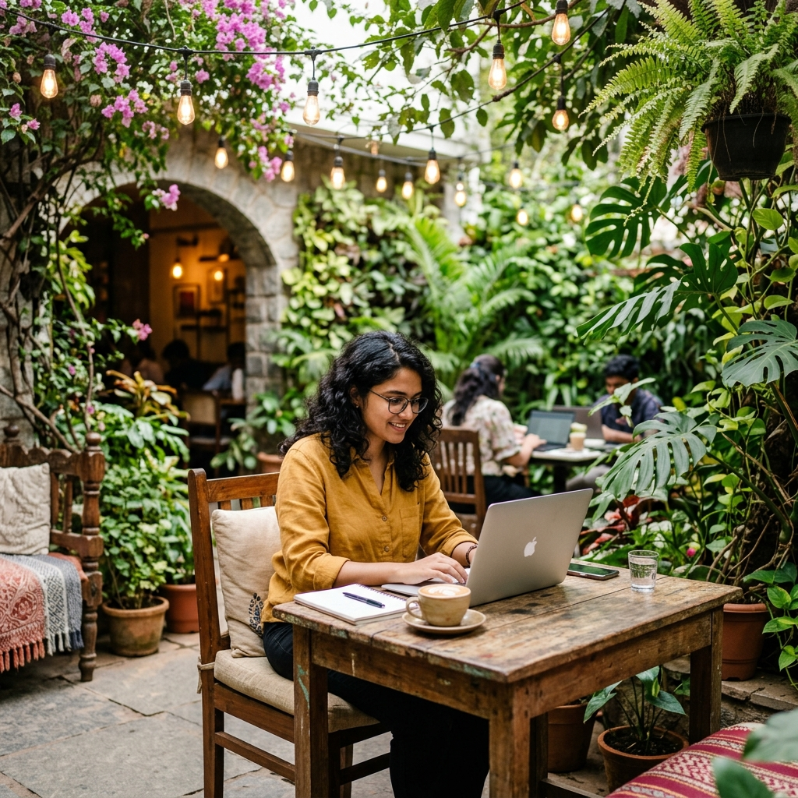

Hand-brewed single-origin coffee and scratch-made brunch for Koramangala's curious palates.
Bloom & Brew is a specialty café tucked into the heart of Koramangala 5th Block. We source our beans directly from farms in Coorg and Chikmagalur, and our kitchen runs on seasonal, locally grown produce. Pull up a chair — the aroma alone is worth the walk.


Bloom & Brew started with a simple question: why does great coffee so rarely come with great food?
Founded by two Bangalore natives — a specialty coffee roaster and a sourdough baker — we set out to build a space where neither takes a back seat. Our beans arrive green from single estates across Karnataka's Western Ghats, roasted in micro-batches three times a week at our in-house roastery.
We're not a chain. We don't have a corporate menu. Every cup and plate reflects what's fresh, what's in season, and what we'd want to eat ourselves.
Beans roasted in-house, never older than 10 days
Every dish from whole ingredients, daily
Produce from farms within 100km of Bangalore
High-speed Wi-Fi, power at every seat
From single-origin pour-overs to scratch-made brunch plates — everything is crafted with intention.
Each pour-over begins with beans from a single estate in Coorg or Chikmagalur, roasted at our in-house micro-roastery. Your barista brews it by hand, adjusting grind and temperature to bring out each bean's natural tasting notes.
Our brunch menu rotates with the seasons, built around what arrives fresh from farms within 100km. Think sourdough bases, free-range eggs from Hesaraghatta, ricotta we make every morning, and house-fermented hot sauces.

BakeryOur sourdough starts with a 4-year-old mother culture and stone-ground flour from Tumkur. The dough ferments for 72 hours before baking — no shortcuts, no commercial yeast, no preservatives.

WorkspaceBloom & Brew was designed with remote workers in mind. Get a dedicated workspace with reliable power, 100 Mbps Wi-Fi, and unlimited filter coffee. The productivity of coworking with the comfort and aroma of a specialty café.
Our garden courtyard and mezzanine level are available for private bookings — from team off-sites and book club meets to birthday brunches and coffee-tasting workshops. We handle the menu, the setup, and the playlist.
Real words from real visitors — the best proof that what we do works.
My third-wave happy place in Bangalore. The Ethiopian pour-over here changed how I think about coffee. And the baristas actually explain the tasting notes without being pretentious about it.
Finally, a café where the brunch is as good as the coffee. The ricotta sourdough toast is unreal. We come here every Saturday now — it's become our weekend ritual.
I work from here 3 days a week. Great Wi-Fi, never crowded on weekday mornings, and the staff actually remembers your order. The day pass is a steal for what you get.